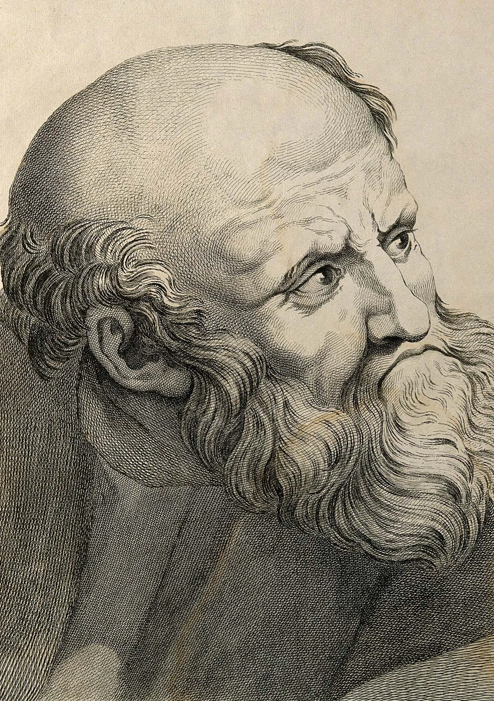

Empedocles (c. 490-330 BC)

Empedocles (c. 494 - 434 BCE) was an ancient Greek philosopher born in Akragas, a Greek city on the island of Sicily. He was one of the Pre-Socratic philosophers, a group of thinkers who explored the nature of the universe before the time of Socrates. Empedocles is best known for his theory that everything in the world is made from four basic elements: earth, water, air, and fire. He believed that these elements combined and separated to create the different things we see around us.
To explain how these elements interacted, Empedocles introduced two opposing forces that he called Love and Strife. Love brought the elements together, while Strife pushed them apart. According to his theory, the constant interaction between these forces was responsible for the changes and processes that occurred throughout the universe. Although his ideas differ from modern scientific explanations, they represented an important attempt to understand nature through logical principles.
Empedocles also had distinctive beliefs about living creatures and the human soul. He opposed animal sacrifice and the killing of animals for food, believing that living beings deserved greater respect. He also supported the idea of reincarnation, according to which the soul passes from one life to another. These beliefs were closely connected to his views on life, death, and the relationship between humans and other living creatures.
Unlike many other philosophers, Empedocles expressed his ideas through poetry rather than ordinary prose. A considerable amount of his writing has survived compared with the work of other Pre-Socratic thinkers, allowing historians to study his philosophy in greater detail. He was also associated with the development of medicine in Sicily, and the ancient physician Galen regarded him as an important figure in the history of Sicilian medicine.
Empedocles' life and death became surrounded by legends, inspiring writers and storytellers in later centuries. His lasting importance comes from his attempt to explain the universe through basic elements and natural forces. His theories influenced later philosophical discussions about matter, change, and the origins of life, making him an important figure in the history of Ancient Greek thought.